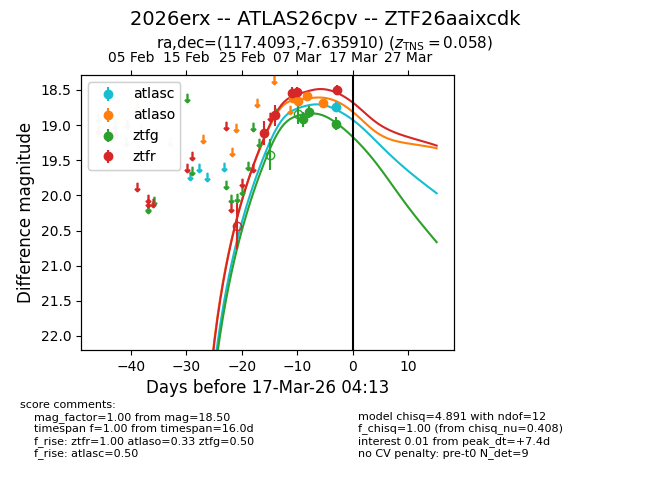
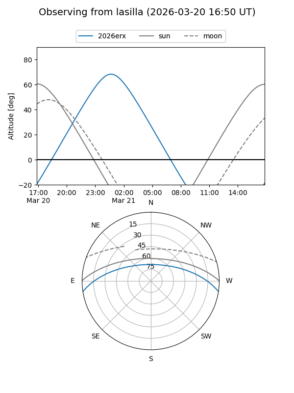
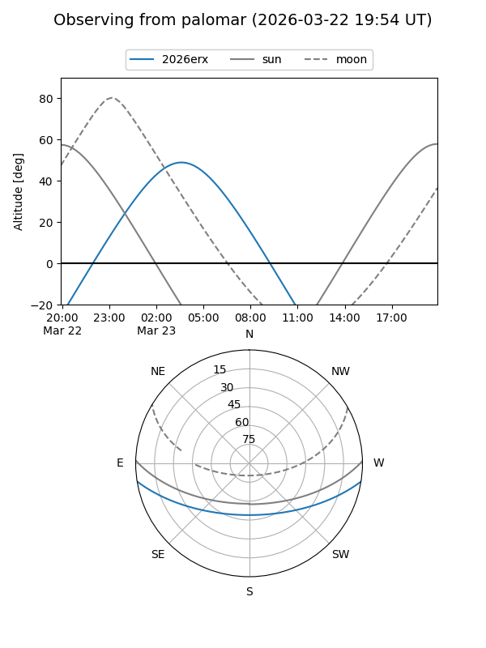
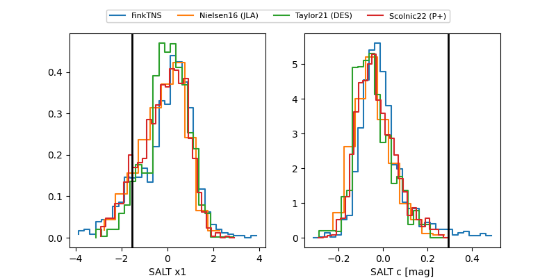

2026erx
Target 2026erx at 2026-03-17 04:15
Aliases and brokers:
FINK: link
Lasair: link
ALeRCE: link
TNS: link
YSE: link
alt names
ZTF26aaixcdk (ztf,fink_ztf)
2026erx (tns,yse)
ATLAS26cpv (atlas)
Coordinates:
equatorial (ra, dec) = 117.4093,-7.63591
equatorial (HMS+DMS) = 07:49:38.23,-07:38:09.27
galactic (l, b) = (226.5154,+9.26563)
Flags:
confirmed ia
Photometry:
last atlasc=18.74, atlaso=18.68, ztfg=18.98, ztfr=18.50
1 atlasc, 4 atlaso, 3 ztfg, 5 ztfr detections
Lightcurve

Visibility


Additional plots
